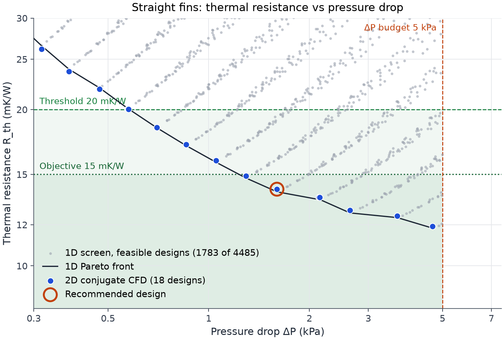
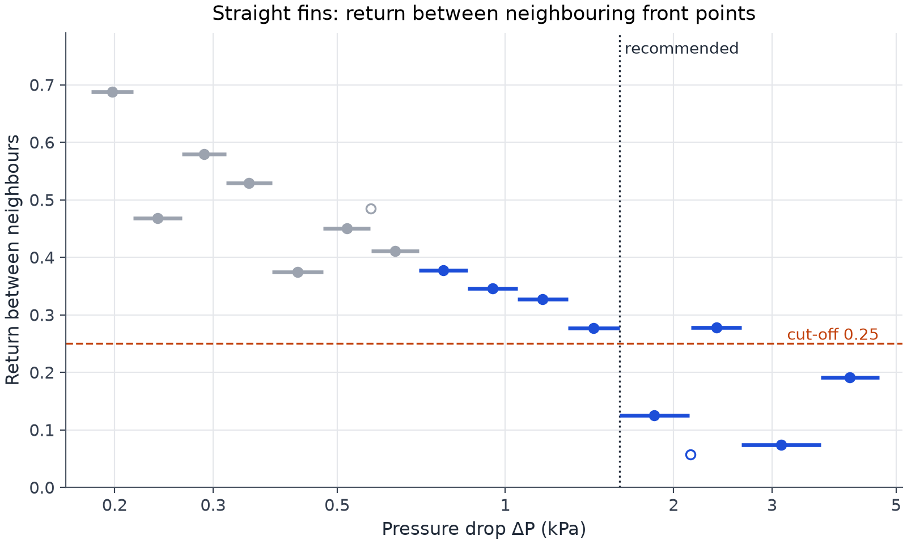
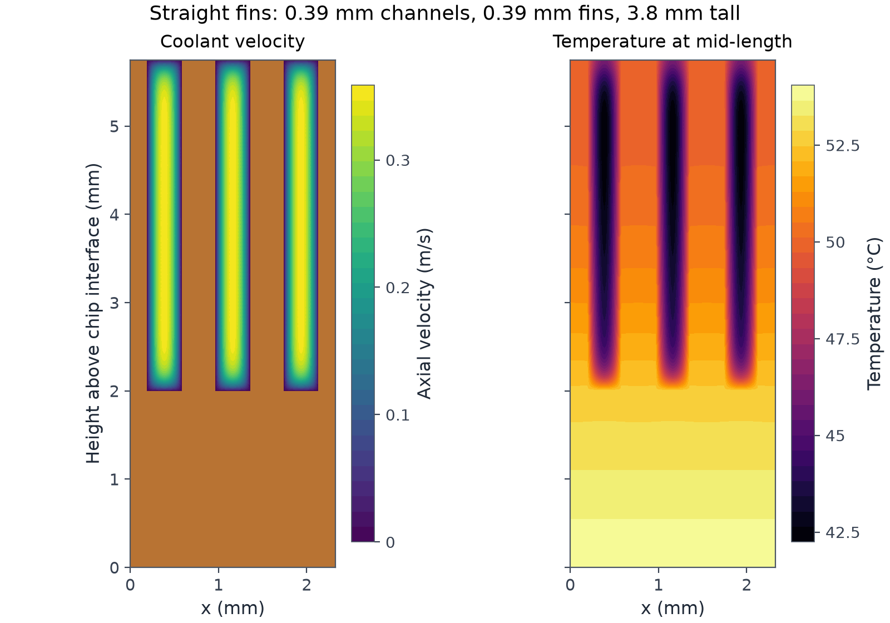
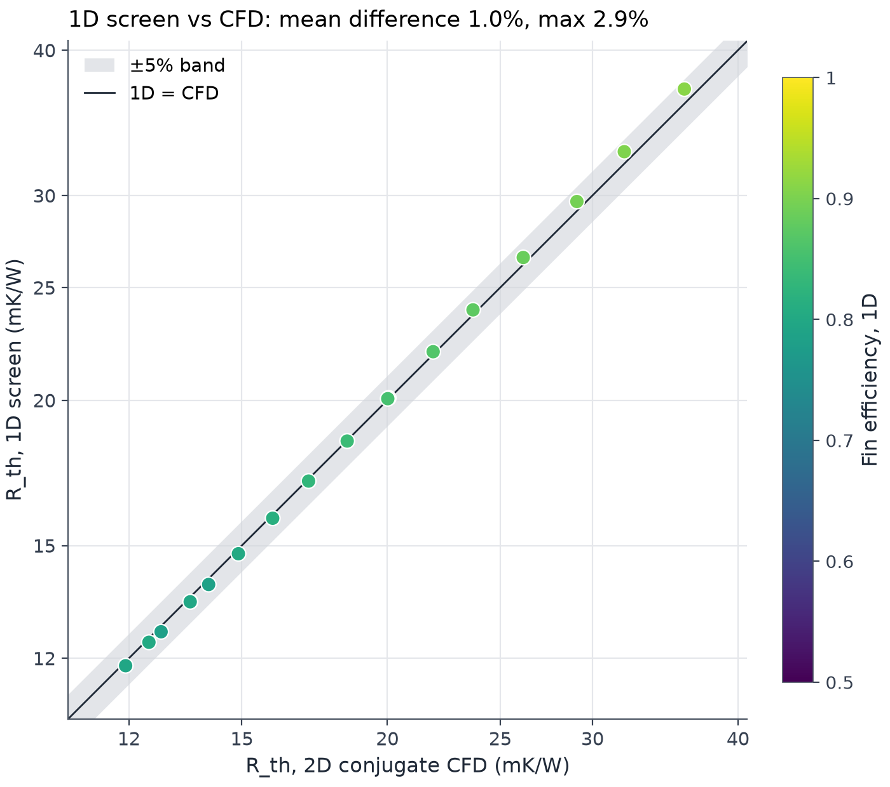
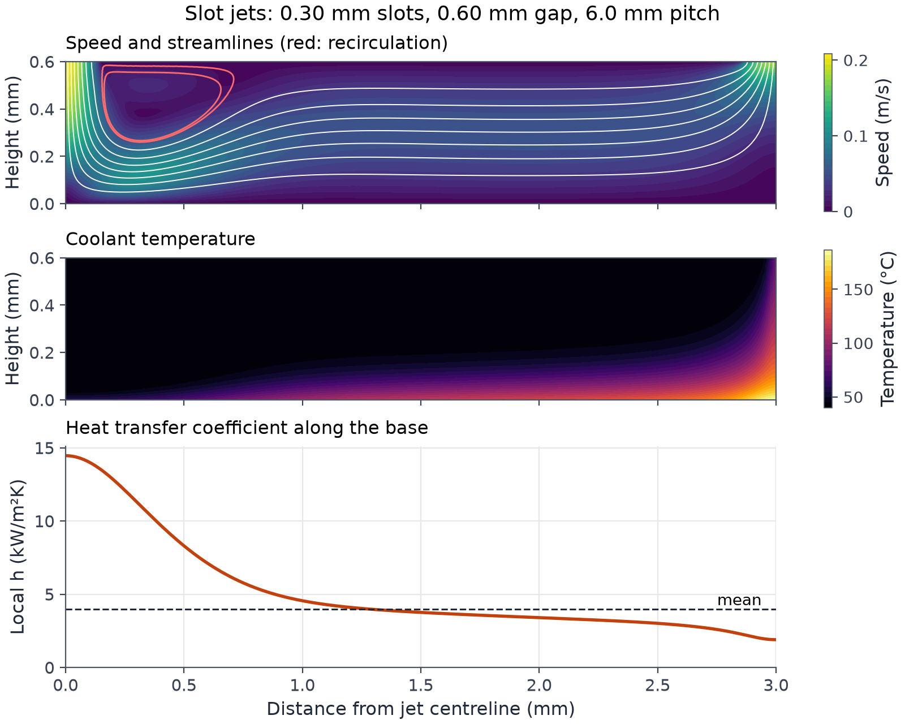
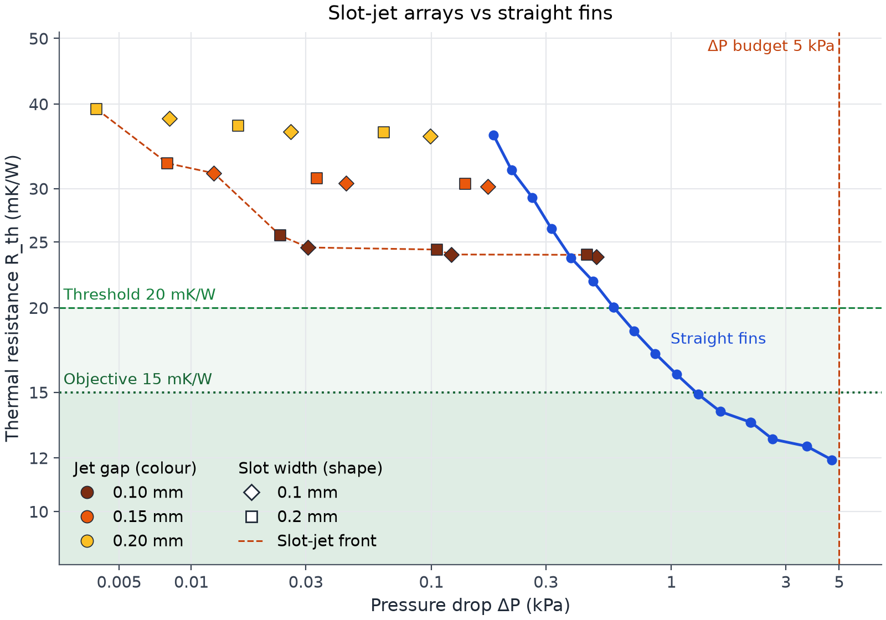
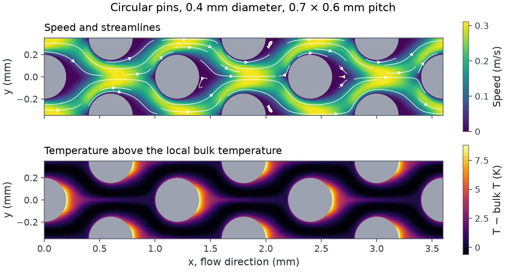
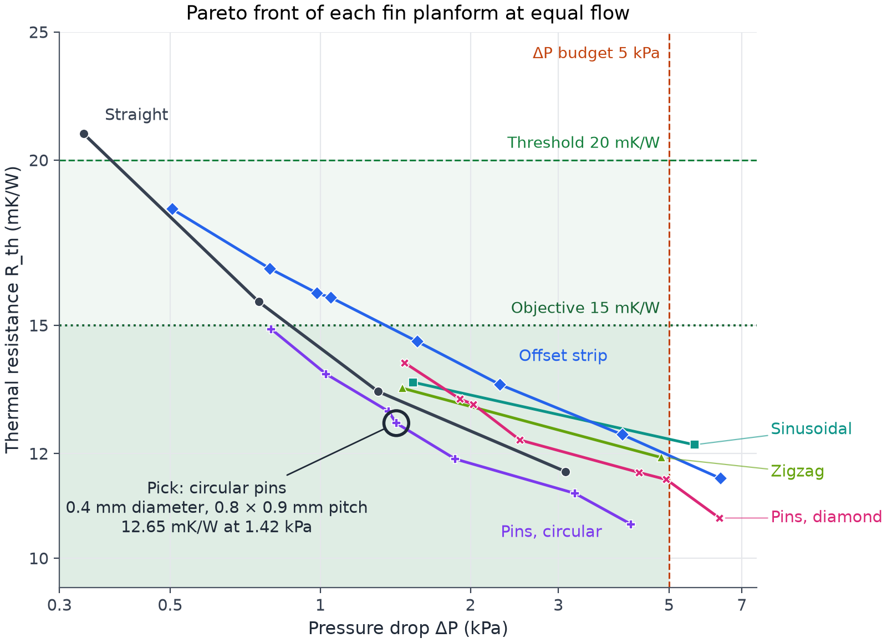
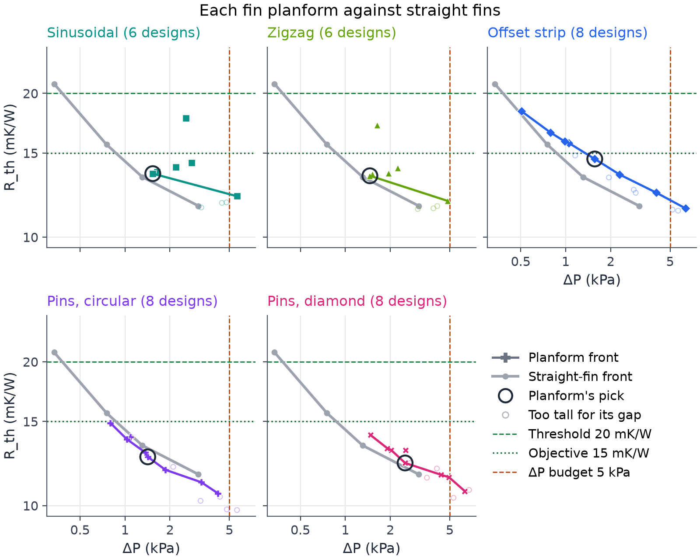

Choosing a cold plate for a 1 kW chip
This study picks a fin geometry for a liquid cold plate under a 1 kW chip, and asks how much simulation that choice needs. A 1D thermal-hydraulic model screens straight-fin designs, and conjugate CFD checks the shortlist.
Under the same fully developed assumptions, the two models agree closely. That agreement is not yet enough to trust the recommendation. It meets the preferred thermal target with a 6.3% margin, but no measured plate has confirmed the model yet, and an apparent advantage for circular pins needs a more complete model.
How it was built: I set the requirements, made the modelling decisions and reviewed the results. Claude, Anthropic's AI model, wrote most of the code and ran the simulations under that direction. Each solver was checked against a known solution before its results were used.

The requirement
A 1 kW chip on a 60 × 60 mm copper cold plate, cooled by 25% propylene glycol at 40 °C. Thermal resistance is measured from the average plate base temperature to the coolant inlet. The interface material and the chip are outside it.
| Criterion | Value | Where it comes from |
|---|---|---|
| Flow | 1.5 LPM | Open Compute Project guidance of 1.5 LPM per kW for a 10 K coolant rise [1] |
| Thermal resistance, must meet | ≤ 20 mK/W | OCP reports under 20 mK/W case to inlet, interface material included, for a 1 kW module [1]. The plate alone has to beat that |
| Thermal resistance, objective | ≤ 15 mK/W | A measured skived plate reached 12 mK/W at 2.6 LPM [2]. 15 leaves about 5 for the interface material |
| Pressure drop in the channels | ≤ 5 kPa | An allocation, a third of a 15 kPa whole-plate budget. No standard found sets a per-plate limit |
| Smallest feature | 0.15 mm | Inside the range a fabrication guide gives for skived copper fins [3] |
Recommended design
Straight copper fins with 0.39 mm channels, 0.39 mm fins, 3.75 mm tall. The CFD gives 14.0 mK/W at 1.60 kPa, which puts the plate base at 54.0 °C on average and 59.0 °C at the outlet end.
The 1D model gives 13.9 mK/W for this design and splits it into about 7.5 for fins and convection, 5.0 for the coolant warming up as it crosses the plate, and 1.4 for conduction through the base. Finer fins only reduce the first part.
| Flow | Pressure drop | Resistance | Average base | Peak base |
|---|---|---|---|---|
| 1.0 LPM | 1.07 kPa | 16.5 mK/W | 56.5 °C | 64.0 °C |
| 1.5 LPM | 1.60 kPa | 14.0 mK/W | 54.0 °C | 59.0 °C |
| 2.0 LPM | 2.13 kPa | 12.8 mK/W | 52.8 °C | 56.5 °C |
This design meets the objective with a 6.3% margin at rated flow, and misses it at 1.0 LPM. Entrance effects, checked below, lower the resistance rather than raise it. Manifolds, uneven flow between channels and a comparison with a measured plate are still open, so the recommendation is provisional until the checks at the end are done.
How it was chosen
Heat-removal capacity at the 20 K allowable base-to-inlet rise, per unit of pressure drop, is not used to choose. It varies as one over the product of resistance and pressure drop, so along a front it rises only where resistance falls faster than pressure drop rises. On every front in this study it falls as pressure drop rises, so it would always point to the lowest-pressure design in the acceptable window. The selection walks along the front instead, and keeps going only while each 1% of extra pressure drop buys at least 0.25% lower resistance. The 0.25 cut-off is a judgment call.
| Design (channel / fin / height) | Resistance | Pressure drop | Return on the next step | |
|---|---|---|---|---|
| 0.46 / 0.44 / 4.0 mm | 15.9 mK/W | 1.05 kPa | 0.33 | Keep going |
| 0.42 / 0.39 / 3.75 mm | 14.9 mK/W | 1.29 kPa | 0.28 | Keep going |
| 0.39 / 0.39 / 3.75 mm | 14.0 mK/W | 1.60 kPa | 0.19 | Stop here |
The table shows the last three steps. Two came before them: the walk starts at 0.55 mm channels (18.5 mK/W at 0.70 kPa), the lowest pressure drop that meets the 20 mK/W limit, and moves through 0.50 mm channels with returns of 0.38 and 0.35. In the last row, 0.19 is the best return to any further design.
The cut-off is a judgment call, so the rule was run again for cut-offs from 0.05 to 0.60. For straight fins the pick stays at 1.60 kPa for cut-offs of 0.20 and 0.25 and at 1.29 kPa (0.42 mm channels, 14.9 mK/W) from 0.30 to 0.60. Below 0.20 it moves to 2.64 kPa and then 4.66 kPa. The circular-pin array picked across fin shapes (below) holds only at the chosen 0.25: a cut-off of 0.20 picks a denser pin array and 0.30 a sparser one.

Method
A 1D model to screen the design space
A resistance network evaluates every combination of channel width, fin thickness and fin height, using base conduction, fin efficiency, laminar duct correlations [4] and coolant heating. It covers 4,485 designs in under 20 milliseconds, and 1,783 of them meet the pressure and manufacturing limits.
An earlier version of this model used circular-tube constants on rectangular channels and had no fin efficiency. Finding that was the first useful result.
Conjugate CFD on the shortlist

All 18 designs on the 1D front within the pressure budget are solved with a finite-element model of the channel cross-section. Flow in the channel and temperature in the fluid, fin and base are solved together.

For these straight-fin designs the two models agree on thermal resistance to 1.0% on average and 2.9% at worst. Both assume fully developed flow, so this shows the 1D model handles fin and base conduction correctly. It does not show that either model matches hardware.
Other geometries
Straight fins look the same at every point along the flow. Jets and interrupted fins do not, so they are solved with a steady laminar Navier-Stokes and energy model in two dimensions.
Slot jets onto a flat base

Coolant enters through long slots in the cover, strikes the base and runs outward to return slots. With slots and gaps of 0.1 mm or more, the best of 18 arrays reached 23.8 mK/W, which misses the 20 mK/W requirement.
For the 18 straight-fin designs checked with CFD, the heated wetted area (channel floor plus both fin sides) is 6.2 to 10.3 times the heated footprint, and 10.2 for the recommended design, so the liquid film over a flat base has to be much thinner to compete. In an earlier sweep, gaps of 0.05 mm came close to the fins. Features that small can be made, as an example by laser cutting, at a relatively small volume.

Fin shapes in plan view

For tall, thin fins the flow over most of the fin height is close to two-dimensional when seen from above. Six fin shapes are solved this way and fed into the same resistance network as before. This model ignores the channel floor and cover.

The table gives the design the rule selects for each shape. These are single points, so they are not at the same pressure drop.
| Fin shape | Selected design | Resistance | Pressure drop |
|---|---|---|---|
| Circular pins | 0.4 mm pins, 0.8 × 0.9 mm pitch | 12.6 mK/W | 1.42 kPa |
| Straight | 0.4 mm channels and fins | 13.4 mK/W | 1.31 kPa |
| Zigzag | 0.4 mm gap, 0.3 mm amplitude | 13.4 mK/W | 1.46 kPa |
| Sinusoidal | 0.4 mm gap, 0.3 mm amplitude | 13.6 mK/W | 1.54 kPa |
| Diamond pins | 0.4 mm side | 12.3 mK/W | 2.51 kPa |
| Offset strip | 1 mm strips, 0.3 mm thick, 3 mm tall | 14.6 mK/W | 1.57 kPa |
For offset strips the walk stops at its first design (18.4 mK/W at 0.50 kPa), which misses the 15 mK/W objective. Other offset-strip designs meet it, so the rule's objective clause continues to the one with the lowest pressure drop.
For a fair comparison, each front is read against the straight-fin front at the same pressure drop, over the range where both exist:
- Circular pins: 2.6 to 5.8% lower resistance, between 0.8 and 1.9 kPa.
- Zigzag and sinusoidal: 2 to 4% higher.
- Diamond pins: 2 to 7% higher.
- Offset strips: 2 to 12% higher.

The pin result is not a recommendation. On straight fins, this plan-view model gives resistance 5.6% lower than the cross-section CFD, because it has no floor or cover. A 3 to 6% lead for pins is the same size as that difference. The pin solutions are also steady, with no check yet on whether the wakes would shed. Skiving cuts continuous fins [3], and no documented volume process was found for copper pins at this size.
The sinusoidal and zigzag fins had higher pressure drop without lower resistance in this model, at Reynolds numbers of about 90 to 150. Published gains for wavy channels are reported at higher Reynolds numbers and attributed to three-dimensional vortices [5, 6], which a plan-view model cannot represent.
What the checks cover
| Check | Quantity | Compared with | Result |
|---|---|---|---|
| Toolchain, fluid-only rectangular ducts at four aspect ratios (a separate script, not the production conjugate solver) | Friction and Nusselt number | Shah and London reference values [4] | within 0.008% |
| Cross-section mesh at twice the resolution | Thermal resistance of the recommended design | Itself | 0.002% change |
| Navier-Stokes solver, developing flow between plates | Local Nusselt number | An independent marching solution | within 0.64% |
| Plan-view solver, straight channel | Friction and Nusselt number | Analytical solution | within 0.004% |
| Plan view against cross-section, same straight design | Resistance and pressure drop | The cross-section CFD | 5.6% and 7.1% low |
| Energy balance, every Navier-Stokes run | Heat in against heat carried out | Conservation (a consistency check) | within 0.76% |
These checks show the solvers reproduce known solutions and that the meshes are fine enough. The duct result verifies the toolchain on a separate fluid-only problem. It does not exercise the production conjugate solver, whose own tests are looser (5% on a limiting Nusselt number); a tighter conjugate benchmark is open as issue 24. The energy balances are conservation checks, and the cross-section one passes at machine precision partly by construction, so they show that each solve is self-consistent, not that the thermal model is accurate. None of the checks is a comparison with a measured cold plate.
Both models assume fully developed flow. To see what that leaves out, the channel of the recommended design was also solved over its full 60 mm from a uniform inlet, in the tall-fin limit (two heated fin walls, no floor or cover). Developing flow raises the length-mean heat transfer coefficient by 5.1% and the channel pressure drop by 1.2%. A 1D entrance correction built from published results [7, 8] matches the resulting changes in resistance and pressure drop to within 3.1% and 2.9%. Of the five designs checked this way, the widest channel misses by 10.8% on resistance. The check compares two parallel-plate calculations passed through the same resistance network. It does not test fin conduction, heat transfer from the channel floor, the adiabatic cover or the real duct, which is about ten times taller than it is wide, and its pressure-drop term is a parallel-plate value. An earlier version of the correction missed them by 36 to 41% and was rebuilt before these numbers were produced. Applied to the recommended design, the correction lowers the resistance from 14.0 to 13.7 mK/W and raises the pressure drop from 1.60 to 1.62 kPa, so the margin on the objective grows to 8.9%. Across the 18 designs the order by resistance does not change, but the return on the last step of the selection falls from 0.277 to 0.248, just under the cut-off, so the rule applied to the corrected values would stop one step earlier, at 0.42 mm channels.
An indicative comparison with a published skived copper plate [2] is recorded on issue 11. With a base of 2 to 3 mm assumed, the 1D model reads 6 to 16% low on thermal resistance from 1 LPM up. The paper does not publish the base thickness, so this is indicative only and not a validation.
Next checks
- The full three-dimensional duct. The tall-fin check of entrance effects agrees with the 1D correction between parallel plates. What it does not cover is development in the real duct, with its floor, cover and corners, and the losses in the inlet and outlet manifolds.
- A measured plate. This needs a published test with complete geometry. The closest one found [2] does not publish its base thickness.
- Pins in 3D. A matched 3D comparison of straight fins and circular pins at equal pressure drop, to see whether the pin lead survives the floor and cover.
References
- Open Compute Project, OAI System Liquid Cooling Guidelines, 2023.
- A. Ortega et al., Determination of the Thermal Performance Limits for Single Phase Liquid Cooling Using an Improved Effectiveness-NTU Cold Plate Model, ASME InterPACK 2022.
- Boyd, Heat Sink Fabrications Guide.
- R. K. Shah and A. L. London, Laminar Flow Forced Convection in Ducts, Academic Press, 1978.
- J. Kundu, Numerical Investigation of Laminar Forced Convection in Two-Dimensional and Three-Dimensional Sinusoidal Corrugated Ducts, MS thesis, University of Cincinnati, 2001.
- N. Ghorbani et al., Investigation of wavy microchannel ability on electronic devices cooling, Scientific Reports 12:5882, 2022.
- Y. S. Muzychka and M. M. Yovanovich, Laminar flow friction and heat transfer in non-circular ducts and channels, Part II: thermal problem, Compact Heat Exchangers, Grenoble, 2002.
- B. Ray, F. Durst and S. Ray, Pressure drop and flow development in the entrance region of micro-channels with second order velocity slip condition and the requirement for development length, arXiv:1707.04947, 2017.
The assumptions register in the repository lists every external number with its source.